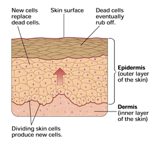

Objectives
- Describe how cell reproduction contributes to repair and to growth.
- Contrast the two main ways that organisms reproduce.
Key Terms
All organisms reproduce their own kind. The ability to reproduce is an important characteristic of living things. Like all life processes, reproduction has a cellular basis. Rudolf Virchow, a German physician, put it this way in 1855: "Where a cell exists, there must have been a preexisting cell . . ." The division of cells into more cells enables living things to repair damage, to grow, and to produce offspring.
Repair and Growth
Take a moment to look at the skin on your arm. You might be surprised to learn that the outermost layer of skin is actually a layer of dead cells. Underneath the surface layer are living cells busily carrying out the chemical reactions you studied in Unit 2. The living cells are also engaged in another vital activity: They are reproducing. The new cells gradually move outward toward the skin's surface, replacing dead cells that have rubbed off (Figure 9-1). This renewal of your skin goes on throughout your life. And when your skin is injured, additional cell reproduction helps heal the wound.
|  |
Figure 9-1
Cell reproduction enables your body to produce new skin cells that replace dead cells at your skin's surface. |
The replacement of lost or damaged cells is just one of the important roles cell reproduction plays in your life. Another is growth—simply increasing in size from a baby to a child to an adult. All of the trillions of cells in your body result from cell reproduction, a series of cell divisions that began with a single fertilized egg cell.
Reproduction
While the production of new cells can result in growth and repair within organisms, cell division also has an essential role in the reproduction of entire organisms. Some organisms reproduce by simple cell division, in which a single cell or group of cells each duplicates its genetic material and then splits into two new genetically identical cells. This process, which is known as asexual reproduction, produces offspring that inherit all their genetic material from just one parent. As a result, the offspring are genetically identical to one another and to their parent. Single-celled organisms such as Paramecium usually reproduce this way. Many multicellular organisms can also reproduce asexually at certain times. For example, some sea stars, when divided into two pieces, can regrow into two whole new individuals through simple cell division. And if you've ever grown a geranium from a leaf cutting, you've taken advantage of the plant's ability to reproduce asexually.
In contrast, when two parents are involved in the production of offspring, the process is called sexual reproduction. In sexual reproduction genetic material from each of two parents combines, producing offspring that differ genetically from either parent. Sexual reproduction involves the union of sex cells, such as an egg and a sperm. These cells are produced by a specialized kind of cell division that you'll read about later in the chapter.
In unicellular organisms, simple cell division results in the asexual reproduction of new organisms. Some unicellular organisms are also capable of sexual reproduction. Most multicellular organisms reproduce sexually, but some may also reproduce asexually. And whether reproduction is sexual or asexual, all multicellular organisms depend on cell division for growth. In this chapter, you'll learn what happens inside cells during both kinds of cell division—the cell division responsible for growth and repair and the cell division that produces sex cells.
Concept Check 9.1
1. Relate cell reproduction to the replacement of skin cells.
2. Describe two ways in which asexual and sexual reproduction differ.
3. How is cell division involved in growth?